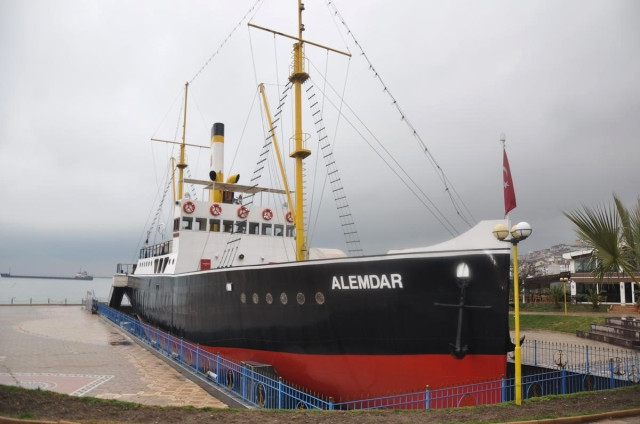

ALEMDAR GEMİSİ
Danimarka'da 1898 yılında 49,475 metre uzunluğunda ve 7,95 metre genişliğinde kurtarma amaçlı inşa edilen, Kurtuluş Savaşı'ndaki hizmetlerinin ardından 1982'de sökülen Alemdar Gemisi, Gazi Alemdar Gemisi Yaptırma ve Yaşatma Derneği önderliğinde ilçedeki 4 tersanede orijinaliyle aynı ölçülerde yapılarak 2008'de müze gemi olarak ziyarete açıldı.kurulmuştu.
Kurtuluş Savaşı'nın "tek deniz çatışmasının" kahramanı olduğu belirtilen Alemdar Gemisi'nin orduya gerekli silah ve cephaneyi Trabzon ve İnebolu'ya deniz yoluyla taşıyarak sunduğu hizmetleri anlatan materyallerin yer aldığı müzeyi, 2013'te de ABD'den Çin'e kadar çok sayıda yabancı turistin de aralarında yer aldığı binlerce kişi gezdi.
Yaklaşık 102 bin olan ilçe merkezi nüfusundan daha faza kişiyi ağırlayan Alemdar Gemisi, geçmişte denizlerde gösterdiği kahramanlığı turizme hizmet ederek sürdürdü.
Sahil bandına konuşlandırılan Gazi Alemdar Müze Gemisi'nin sorumlusu Kenan Kalyoncu, AA muhabirine yaptığı açıklamada, Türkiye'nin çok sayıda ilinin yanı sıra ABD, Almanya, Çin, Filipinler, Rusya, Hollanda, Romanya, Japonya, İsviçre, Fransa, Belçika, Yunanistan ve Bulgaristan'ın da aralarında yer aldığı dünyanın birçok ülkesinden turistlerin müzeyi gezdiğini söyledi.
Müze gemiyi açıldığı tarihten itibaren 700 bin civarında kişinin gezdiğini ifade eden Kalyoncu, "Alemdar Gemisi'ni 2013'te de 145 bin kişi ziyaret etti. Her yıl ziyaretçi sayısında artış yaşanması bizleri de son derece mutlu ediyor. Hafta sonu ve tatil günlerinde ziyaretçi oranında büyük artış yaşanıyor. Müze gemi bölgenin en önemli turizm unsurlarından biri konumunda" diye konuştu.
ALEMDAR'IN DESTANSI ÖYKÜSÜ
Gazi Alemdar Gemisi Yaptırma ve Yaşatma Derneği kayıtlarından derlenen bilgiye göre, 1898'de Danimarka'da kurtarma gemisi olarak inşa edilen Alemdar, Marmara Denizi ve boğaz çevresinde Osmanlı'da kurtarma hizmetleri yapıyordu.
Birinci Dünya Savaşı sonunda Osmanlı donanmasının çürümeye terk edilmesinin ardından muharebe gücü olmayan gemiler arasında yer aldığından kurtarma seferleri yapmasına izin verilen Alemdar'ı milli mücadelenin içine çekebilmek için boğazdan kaçış planı hazırlandı.
Gemideki 7 kahraman denizci, Karadeniz'deki şiddetli fırtınayı fırsat bilerek demir aldı. Müttefik gemilerin arasından geçerken "batmakta olan bir gemiye yardıma gittiklerini" söyleyen denizciler, boğazdan çıkıp zorlu yolculuğun ardından Ereğli'ye ulaştı.
Ereğli'den 80 ton kömür yüklenen Alemdar, bir süre sonra Trabzon'a gitmek üzere hareket ettiği sırada ilçedeki gayrimüslimlerin ve casusların haber vermesi sonucu Fransız Karadeniz Komutanlığı'ndaki C-27 gambotu, Bartın'ın Amasra ilçesinde pusuya yatarak gemiye asker çıkardı.
Yönü İstanbul'a çevrilen ve C-27 gambotunun takibe aldığı Alemdar'ın personeli, kurtuluş planları yaptı. Gemide kemençe eşliğinde horon oynayan personel, davet ettikleri 5 askeri etkisiz hale getirip silahlarına el koydu.
Ani manevrayla dümen kıran Alemdar'ın peşine düşen gambottan açılan ateşe tüfeklerle karşılık veren gemi personeline, Ereğli'ye yaklaşılması üzerine karadan da destek verildi.
Sandallarla da denize açılan vatandaşların desteğiyle C-27 gambotu mağlup olarak bölgeden ayrılırken, esir 5 askerin serbest bırakılmasına karşılık Fransızlardan Karadeniz'de dolaşan Türk bayraklı gemilere dokunulmaması garantisi alındı.
Fransızlarla yapılan anlaşma gereği milli mücadelenin sonuna kadar Ereğli'de demirli kalması gereken Alemdar, yine efsanevi bir kaçış öyküsüyle siyah rengi griye boyanarak Trabzon'a getirildi.
Rusya'dan harp malzemesi taşıyan gemilere karakol ve kollama görevi yapan Alemdar, 1951'de İstanbul Haliç Tersanesinde onarımdan geçirildikten sonra 1959'dan itibaren hizmet dışı bırakıldı.Alemdar Gemisi, 1964 ve 1980'de özel firmalar tarafından satın alınmasının ardından 1982'de söküldü.